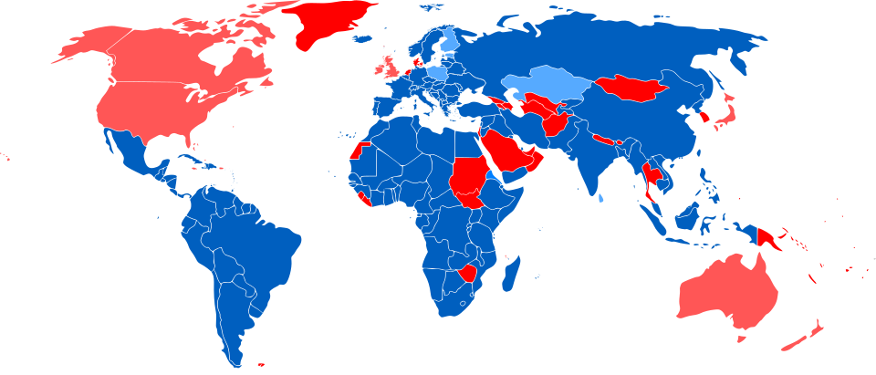

Todo ciudadano debe entender por qué se conmemora este día.
El Día Internacional del Trabajador nace de una lucha histórica por la dignidad. A finales del siglo XIX, las jornadas laborales eran extenuantes, alcanzando hasta 18 horas diarias. Ante esta realidad, los trabajadores de EE. UU. se unieron bajo una consigna clara: establecer la jornada de 8 horas.
En mayo de 1886, la ciudad de Chicago se convirtió en el epicentro de esta lucha cuando los empleados de la fábrica McCormick se declararon en huelga. Lo que comenzó como un reclamo justo fue recibido con una violenta represión policial que dejó numerosos muertos y heridos durante varios días de protestas.
El punto crítico ocurrió el 4 de mayo en la Plaza Haymarket, donde un incidente con una bomba (cuya autoría nunca se probó) desató el caos.A raíz de esto, el 21 de junio de 1886, se inició una causa judicial contra treinta y un responsables, que luego se redujeron a ocho. Este proceso ha sido calificado históricamente como un "juicio farsa", ya que se violaron todas las normas legales para declarar culpables a los líderes obreros. Sin pruebas contundentes, tres de ellos fueron condenados a prisión y cinco a muerte en la horca.
Estos hombres, conocidos como los "Mártires de Chicago", se convirtieron en símbolos mundiales de la resistencia laboral. Sus nombres y condenas detalladas fueron:
Gracias a este sacrificio, la indignación global creció hasta que, en 1919, la OIT adoptó oficialmente la jornada universal de 8 horas. Hoy, cada 1º de mayo recordamos que los derechos actuales son el fruto de la solidaridad y el coraje de aquellos que no se rindieron.
A más de un siglo de los eventos de Chicago, el reconocimiento de esta fecha ha trascendido fronteras, convirtiéndose en un símbolo global. Sin embargo, la forma en que cada nación honra este legado varía según su propia historia y legislación. En el siguiente mapa, podemos observar cómo se distribuye actualmente la conmemoración del Día de los Trabajadores en el mundo, destacando aquellos países que mantienen el 1 de mayo como su estandarte de lucha y derechos.

Mapa que muestra cómo se celebra el Día del Trabajador en el mundo.